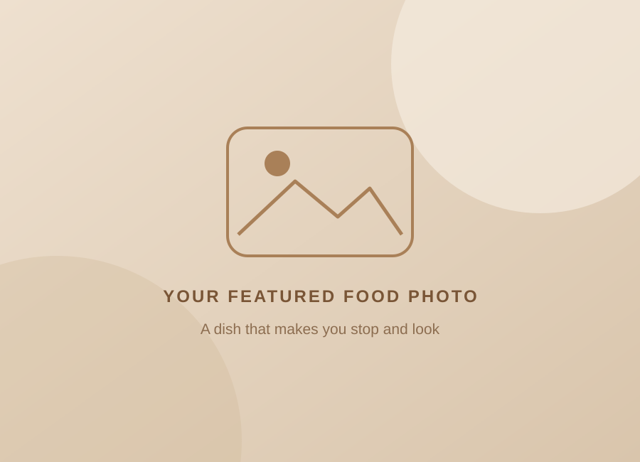
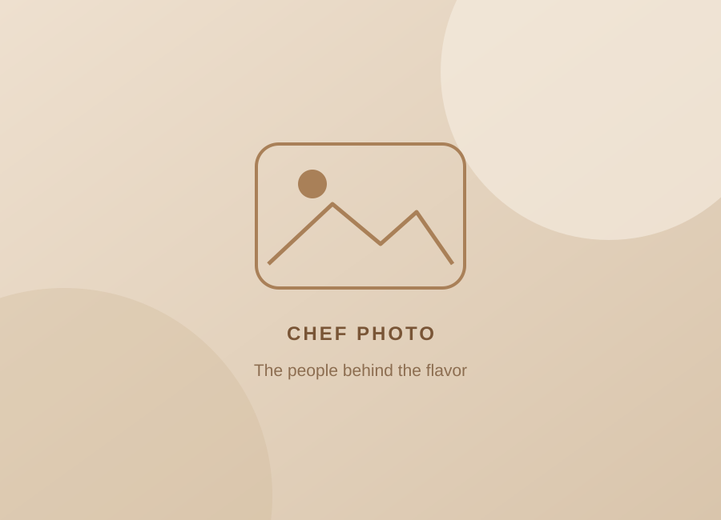

01 / DISCOVER
Follow your cravings.
Explore different cuisines and find something you would love to try.
Find a new flavor →GOOD FOOD. NEW DISCOVERIES.
From familiar favorites to something new, find a restaurant worth exploring.

Something delicious is waiting.MADE FOR YOUR NEXT MEAL
Find a new flavor, explore your neighborhood, or add a place of your own.
Explore different cuisines and find something you would love to try.
Find a new flavor →
Search a name or cuisine, then choose a borough to explore the area.
Browse the directory →Add a restaurant and keep its details up to date for the next discovery.
Manage restaurants →CRAVR / EST. 2024
THE STORY BEHIND CRAVR
A simple way to discover the places behind your next meal.
CRAVR brings restaurant details into one easy-to-explore directory. Whether you have a cuisine in mind or want to see what is around, your next discovery starts here.
Browse by name, cuisine, or borough. Keep the collection growing by adding restaurants and updating their information.
Find your next destination ↗Explore cuisines and familiar favorites.
Narrow your search by borough.
Add, edit, and manage restaurant listings.
EXPLORE THE DIRECTORY
A familiar name or a new cuisine. Start with what you’re craving.
| Name | Borough | Cuisine | Address | Grades / scores | Actions |
|---|
THE CRAVR COLLECTION
Explore ten restaurants from the directory, with their cuisine, location, and inspection history at a glance.
How this collection is ordered
We add each restaurant’s inspection
scores, keep totals above 90, and show the ten highest totals. These are inspection
records, not customer ratings or a measure of food quality.